builderscon tokyo 2018 IoT / Gadget Nite
builderscon tokyo 2018 IoT / Gadget Nite
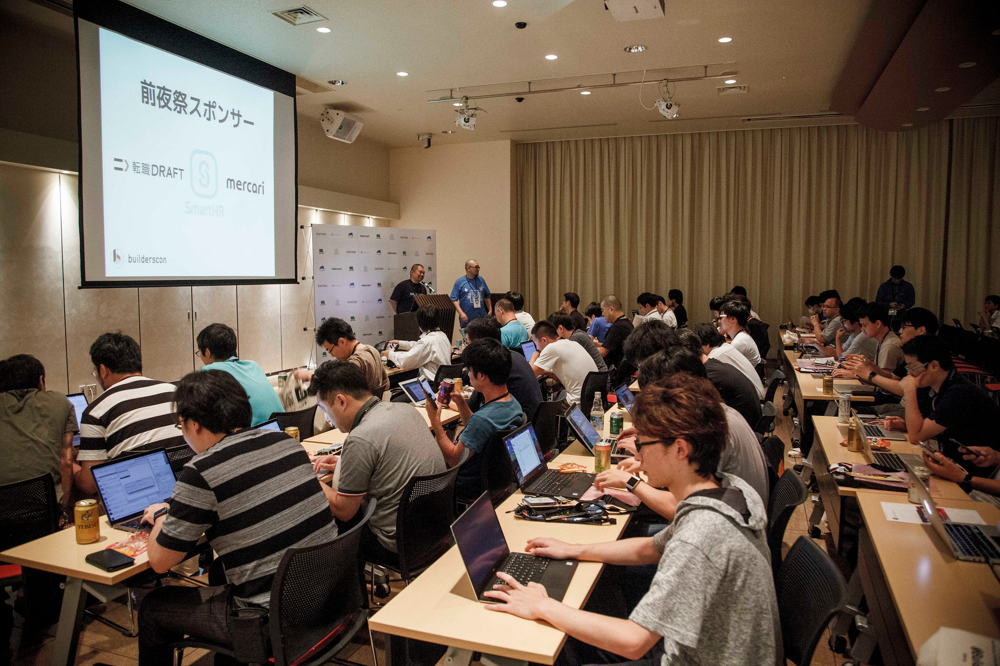
This is part of a series of articles to show you what builderscon tokyo 2018was about. builderscon took place between September 6–8, 2018.
Sep 6 (Thu) Sep 7 (Fri) Sep 8 (Sat) @Kyoseikan, Keio University In association with Keio University Graduate School of…builderscon.io
- Speaker Dinner (Sep 5, 2018)
- IoT / Gadget Nite (Sep 6, 2018) — this article
- Main Dates (Sep 7–8, 2018)
The Night Before
Every year we take one evening before the main conference to hold a smaller-scale meetup. We use the meetup to gather a few talks that concentrate on a particular theme, as well as for the staff to rehearse the whole check-in process.
This year we decided to gather talks about IoT gadgets, and the process of inventing these, with sponsorship from 転職DRAFT, SmartHR, and mercari
ITエンジニアを企業が年収付きで競争入札する転職サイト。通常、内定段階までわからない年収が最初に提示されるため、金額を見た上で選考に進むかを判断でき、リアルな市場価値もわかります。2ヶ月に1回開催中。job-draft.jp
https://www.mercari.com (apologies, I can’t seem to make medium.com unfurl this link)
The Practice Run
We switch venues almost every year. Event if we didn’t, our check-in varies ever so slightly that we need to design and re-think the placement of various materials and the flow of people. This pre-conference meetup is where we come up with, and test the actual flow
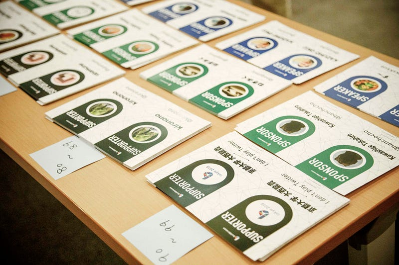
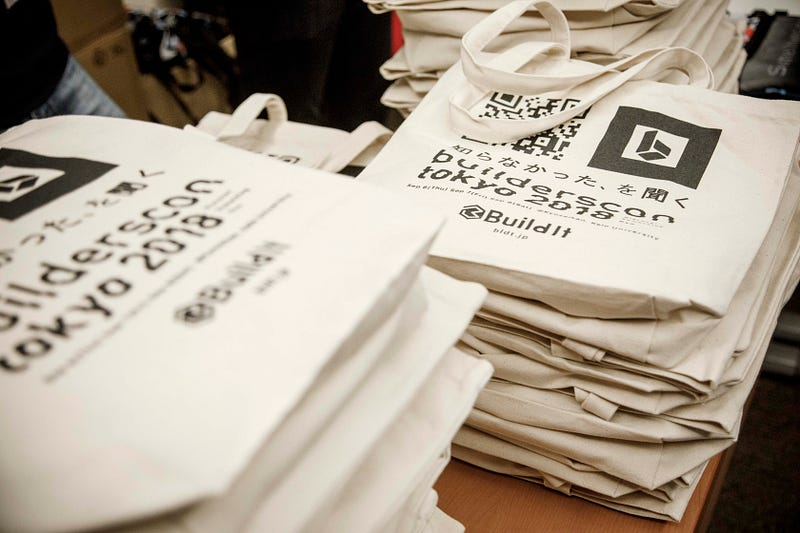
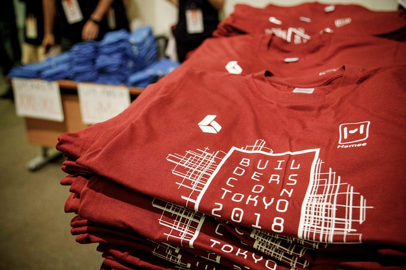
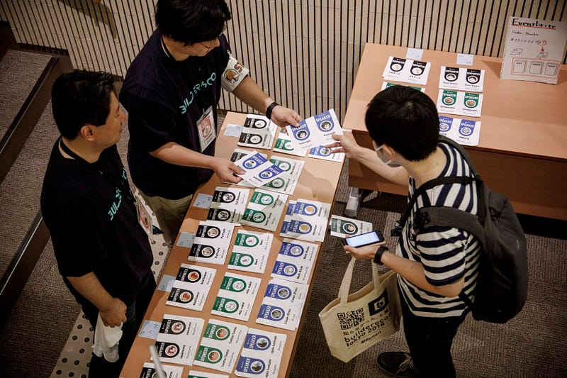
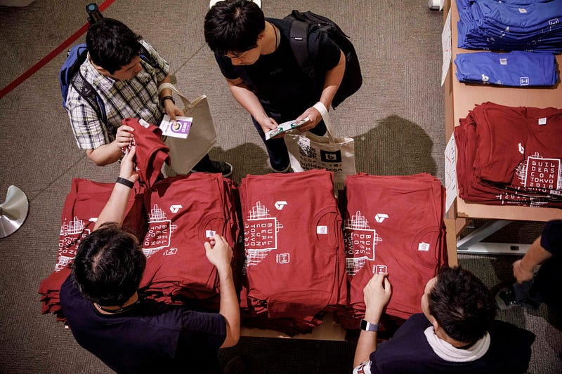
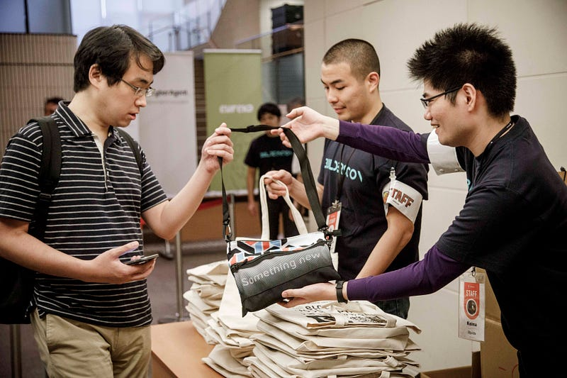
Those who came to the event can check-in early — that means they can also get the special swags for the supporter tickets:
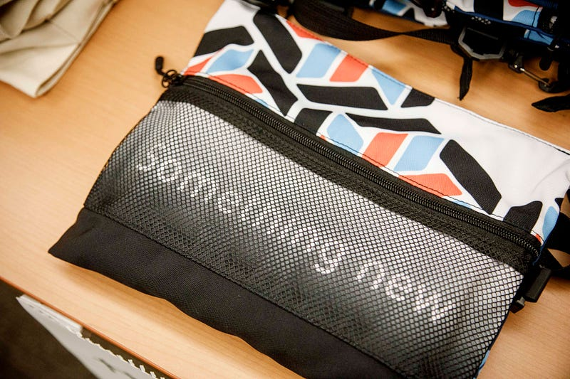
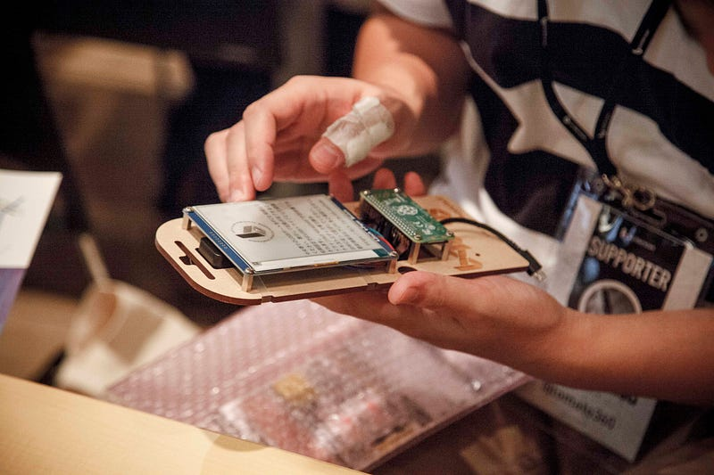
The Sessions
The list of sessions can be found below. We had talks on creating electronic badge, creating a keyboard, the perils fo manufacturing IoT devices, using VR chat to interview new hires, and a showcase of various gadgets that they made for Make.
Discover Something New - builderscon is a festival for those who love tech!builderscon.io
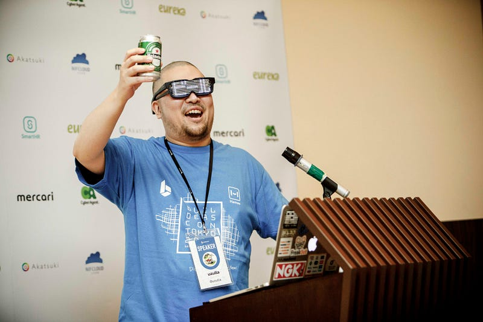
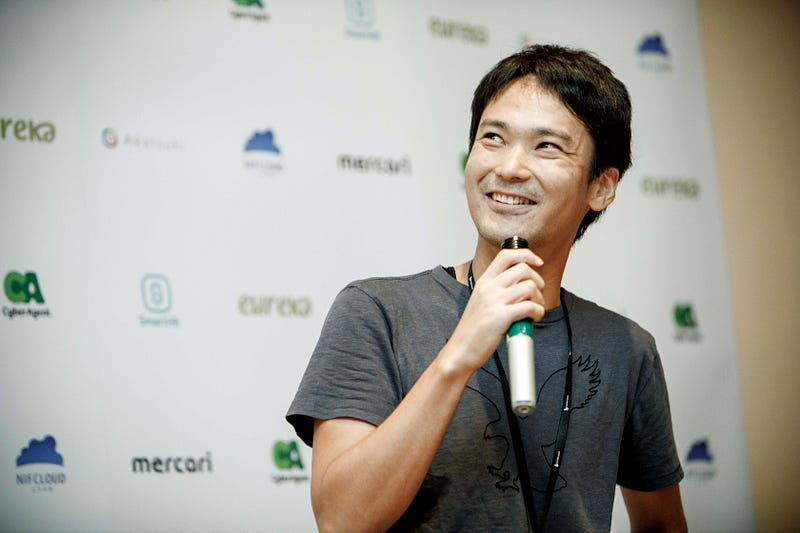
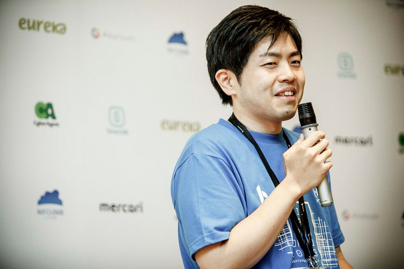
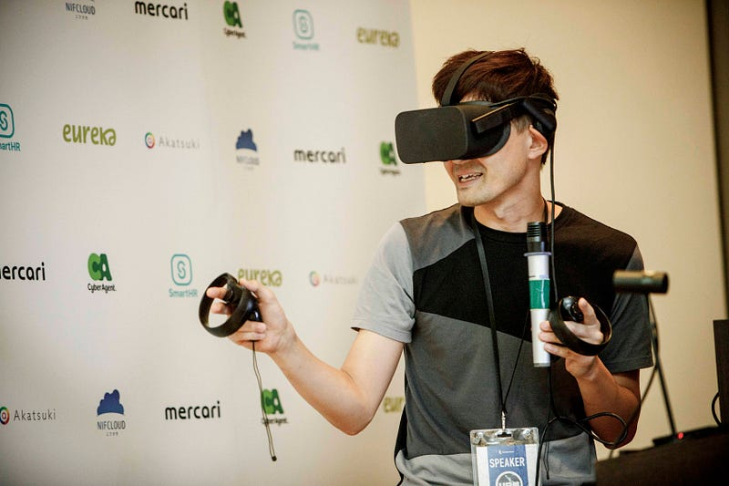
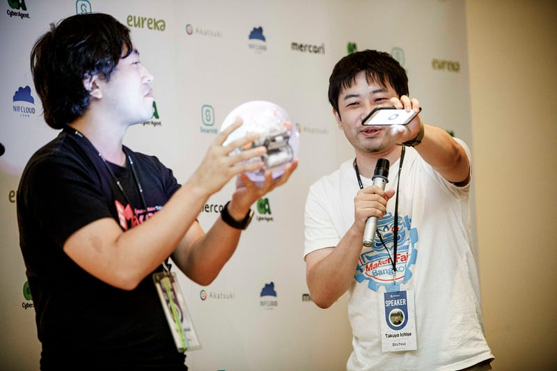
We were treated to various interesting gadgets that we usualy may not necessarily have access to. The audience absolutely loved it.
We don’t intend to make buildescon completely focused on physical devices, but it’s certainly one of the many cool technologies that we are interested in seeing.